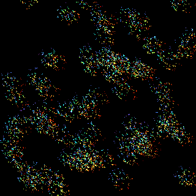
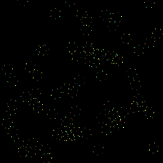

SMLMDriftCorrection.jl
Fiducial-free drift correction for Single Molecule Localization Microscopy (SMLM).
Overview
SMLMDriftCorrection.jl implements entropy-based drift correction using Legendre polynomial models. The algorithm corrects both:
- Intra-dataset drift: Drift within each dataset (movie segment) modeled as a polynomial over time
- Inter-dataset drift: Constant shifts between datasets to align them
All distance units are in micrometers (μm).
Installation
using Pkg
Pkg.add("SMLMDriftCorrection")Quick Start
using SMLMSim
using SMLMDriftCorrection
using SMLMRender
DC = SMLMDriftCorrection
# Simulate blinking data (hexamers, 2 datasets)
params = StaticSMLMConfig(7.5, 0.13, 50, 2, 1000, 50.0, 2, [0.0, 1.0])
(smld_noisy, _) = simulate(params;
pattern=Nmer2D(n=6, d=0.2),
molecule=GenericFluor(; photons=35000.0, k_on=0.25, k_off=50.0),
camera=IdealCamera(1:32, 1:32, 0.1)
)
# Create synthetic drift (~200nm diagonal) and apply it
drift_true = DC.LegendrePolynomial(smld_noisy; degree=2, initialize="zeros")
for ds in 1:smld_noisy.n_datasets
drift_true.intra[ds].dm[1].coefficients .= [0.10, 0.03] # x drift
drift_true.intra[ds].dm[2].coefficients .= [0.08, -0.02] # y drift
end
drift_true.inter[2].dm .= [0.05, -0.03]
smld_drifted = DC.applydrift(smld_noisy, drift_true)
# Correct drift
(smld_corrected, info) = driftcorrect(smld_drifted)
# Results
N = length(smld_noisy.emitters)
rmsd = sqrt(sum(
([e.x for e in smld_corrected.emitters] .- [e.x for e in smld_noisy.emitters]).^2 .+
([e.y for e in smld_corrected.emitters] .- [e.y for e in smld_noisy.emitters]).^2
) / N)
println("Localizations: ", N)
println("RMSD: ", round(rmsd * 1000, digits=1), " nm")
println("Elapsed: ", round(info.elapsed_s, digits=1), " s")Localizations: 8471
RMSD: 0.3 nm
Elapsed: 90.5 sBefore and After
Histogram renders colored by frame number show drift smearing (before) and recovery (after):
Drifted — localizations smeared by ~200 nm of drift:
(img_drifted, _) = render(smld_drifted, strategy=HistogramRender(), color_by=:frame, colormap=:turbo, zoom=10)
save_image("drifted.png", img_drifted)
Corrected — hexamer structure recovered (RMSD ~1 nm):
(img_corrected, _) = render(smld_corrected, strategy=HistogramRender(), color_by=:frame, colormap=:turbo, zoom=10)
save_image("corrected.png", img_corrected)
Usage Examples
With Simulated Data
using SMLMSim
using SMLMDriftCorrection
DC = SMLMDriftCorrection
# Simulate data
params = StaticSMLMConfig(10.0, 0.13, 30, 3, 1000, 50.0, 2, [0.0, 1.0])
(smld_noisy, _) = simulate(params;
pattern=Nmer2D(n=6, d=0.2),
molecule=GenericFluor(; photons=5000.0, k_on=0.02, k_off=50.0),
camera=IdealCamera(1:64, 1:64, 0.1)
)
# Create and apply synthetic drift
drift_true = DC.LegendrePolynomial(smld_noisy; degree=2, initialize="random", rscale=0.1)
smld_drifted = DC.applydrift(smld_noisy, drift_true)
# Correct drift
config = DriftConfig(verbose=1)
(smld_corrected, info) = driftcorrect(smld_drifted, config)With SMITE Data
using SMLMData
using SMLMDriftCorrection
smd = SmiteSMD(path, file) # *_Results.mat file
smld = load_smite_2d(smd)
(smld_corrected, info) = driftcorrect(smld, DriftConfig(verbose=1))Filtering to ROI
x = [e.x for e in smld.emitters]
y = [e.y for e in smld.emitters]
mask = (x .> 64.0) .& (x .< 128.0) .& (y .> 64.0) .& (y .< 128.0)
smld_roi = filter_emitters(smld, mask)
(smld_corrected, info) = driftcorrect(smld_roi, DriftConfig())Continuous Acquisition Mode
For data where drift accumulates across files (one long acquisition split into multiple datasets):
# Continuous mode - drift chains across datasets
config = DriftConfig(dataset_mode=:continuous)
(smld_corrected, info) = driftcorrect(smld, config)
# With chunking for finer-grained correction
config = DriftConfig(dataset_mode=:continuous, chunk_frames=4000)
(smld_corrected, info) = driftcorrect(smld, config)Warm Start / Continuation
# Warm start from previous model
config1 = DriftConfig(degree=2)
(smld1, info1) = driftcorrect(smld1, config1)
config2 = DriftConfig(warm_start=info1.model)
(smld2, info2) = driftcorrect(smld2, config2)
# Continue iterating from previous result
(smld3, info3) = driftcorrect(smld1, info1; max_iterations=5)Dataset Modes
Both modes use the same entropy-based alignment algorithm. The difference is semantic:
:registered(default): Datasets are independent acquisitions. Use default trajectory plotting.:continuous: One long acquisition split into multiple files. Usedrift_trajectory(info.model; cumulative=true)for plotting accumulated drift.
Algorithm
The algorithm uses entropy minimization (Cnossen et al., 2021) with Legendre polynomial basis functions:
Intra-dataset: For each dataset, fit a Legendre polynomial (degree 2 by default) to model drift over time. Uses KL divergence-based entropy as cost function with adaptive KDTree neighbor rebuilding. Threaded across datasets.
Inter-dataset: Align datasets using constant shifts optimized via merged-cloud entropy minimization. First pass aligns all to dataset 1 (threaded), then sequential refinement against all earlier datasets.
Iterative (
:iterativequality only): Repeat intra↔inter until inter-shift changes converge below tolerance.
The Legendre polynomial basis provides better optimization conditioning than standard polynomials because the basis functions are orthogonal over the normalized time domain [-1, 1].
Intra-dataset correction and the first inter-dataset pass are parallelized with Threads.@threads. Start Julia with multiple threads (e.g., julia -t auto) for best performance on multi-dataset data.
References
Cnossen J, et al. "Drift correction in localization microscopy using entropy minimization", Optics Express 29(18), 2021. DOI: 10.1364/OE.426620
Wester MJ, et al. "Robust, fiducial-free drift correction for super-resolution imaging", Scientific Reports 11, 2021. DOI: 10.1038/s41598-021-02850-7
Documentation
- Configuration - Full description of
DriftConfiginput andDriftInfooutput - Theory & Workflow - Algorithm background, dataset modes, and quality tiers
- API Reference - Complete API documentation